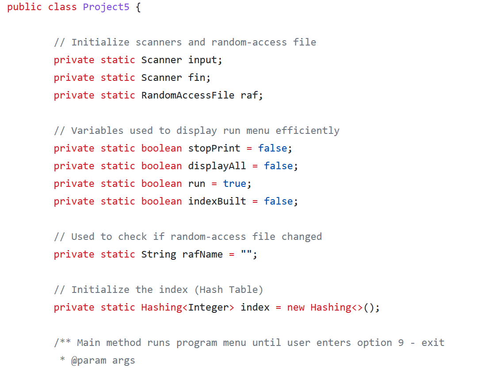
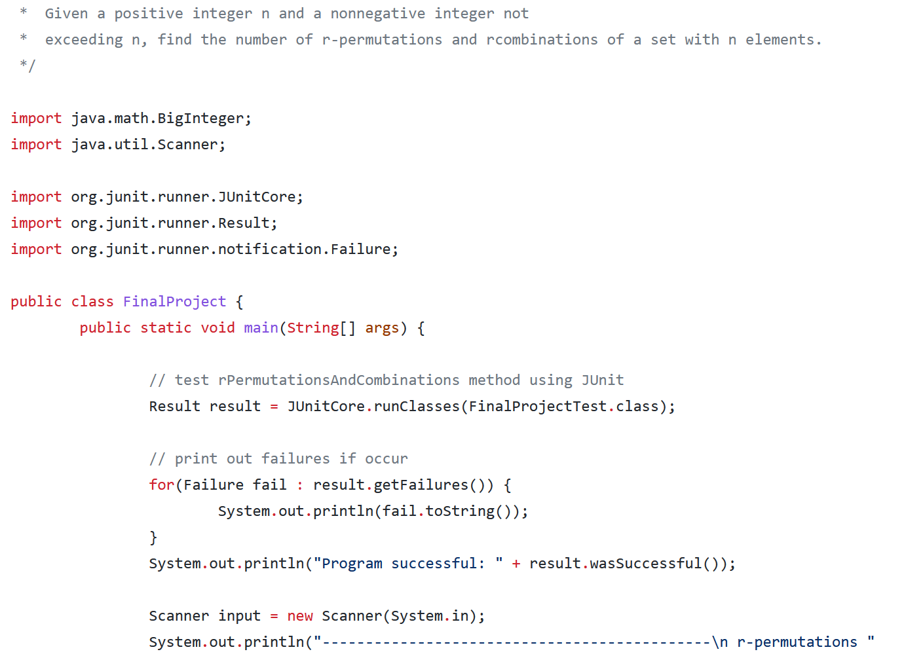
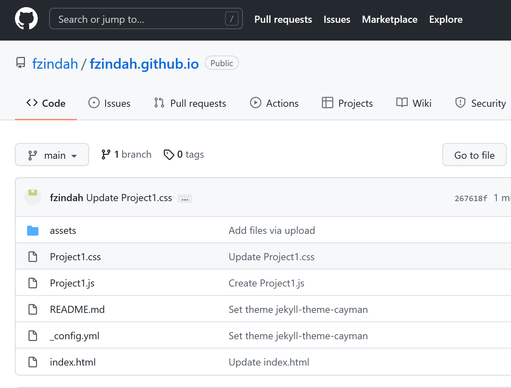

734-679-8636
| Human Vectors by Vecteezy |
backgroundHi, my name's Farha! I've lived in Ann Arbor, MI most of my life. A few things I've been passionate about since I was a kid include programming, martial arts, art, and any dessert with chocolate involved. I'm also currently part of the Women in Computer Science organization at EMU. |
|---|
|
|
|
|
|
|---|
Projects |
||
|---|---|---|
|

Java database project |

Java Permutations and Combinations, discrete math |

Website HTML, CSS, JavaScript |